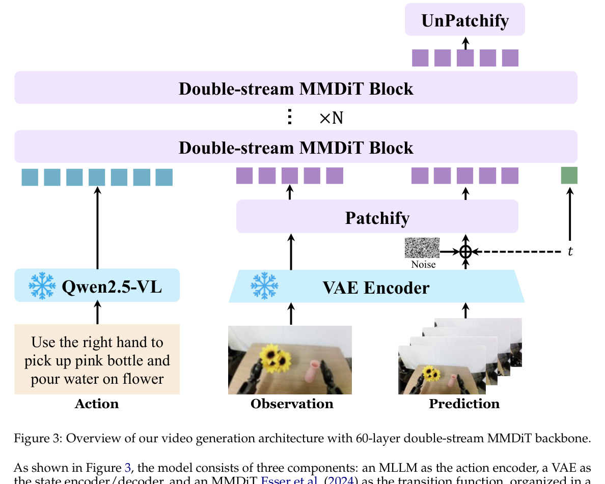

Paper Reading · Robotics World Models
Qwen-RobotWorld：把语言当作 embodied world model 的统一 action 接口
Qwen-RobotWorld 是 Qwen-Robot 三篇里最接近 “world model” 的一篇：它不直接输出机器人动作，而是把当前视觉状态和语言动作描述送入视频生成式 transition model， 预测未来视觉轨迹。最值得讨论的不是“视频更好看”，而是它把异构动作统一到自然语言接口这件事到底能走多远。
0. 一句话结论
痛点：机器人操作、自动驾驶、室内导航、人到机器人迁移的 action space 完全不同，低层动作很难放进一个世界模型。 核心招：Qwen-RobotWorld 把动作统一成自然语言，用冻结 Qwen2.5-VL 编码语言动作，用 Wan-VAE 编码视觉状态，再用 60 层 20B double-stream MMDiT 生成未来视频。 效果：报告称在 EWMBench overall 4.60、DreamGen Bench total 4.952 排第一，并在 WorldModelBench 和 PBench 超过所有开源模型。 代价：语言动作是高层、稀疏、欠定的接口，不等价于真实低层控制；结果主要证明“语言条件未来视觉生成”强，不等于闭环 policy 已经可靠。
- 这篇到底在解决什么
- 它解决的是 embodied world model 的 action interface 问题：用自然语言把 Franka 操作、车道变换、室内导航、人手示范迁移都写成同一种 conditional video generation task。
- 核心 insight
- 如果目标是统一多个具身域，语言比 joint/action token 更通用。它牺牲控制精度，换来跨具身、跨任务、跨数据源的共同训练接口。
- 是不是一个 system
- 是一个系统级报告：数据工程 EWK、标注体系、MMDiT 架构、Scene2Robot 迁移、benchmark 评测一起构成。单个模块的新意不如“把动作语言化以后大规模训 world model”的系统整合更重要。

1. 论文定位
Qwen-RobotWorld 属于 language-conditioned embodied video world model。 形式上接近 \[ s_{t+1:t+H}=f_\theta(s_t,a_t), \] 但这里的 \(s\) 是视觉帧或 VAE latent，\(a_t\) 不是关节命令，而是 action-rich natural language。
| 模型类型 | 输出 | 动作接口 | Qwen-RobotWorld 的位置 |
|---|---|---|---|
| VLA policy | 低层动作 chunk | joint/EEF/action token | 不是 policy，不直接控制机器人 |
| General video generator | 视频 | 普通文本 prompt | 比普通 T2V 更强调物理动作和初始状态 |
| Embodied world model | 动作条件未来视觉 | 动作、目标或语言 | 用语言作为统一 action interface |
2. 方法总览
initial observation video/image x
-> Wan-VAE encoder E(x) = z
language action S
-> frozen Qwen2.5-VL phi(S) = h
noise epsilon + timestep t
-> noisy latent z_t
h + z_t
-> 60-layer double-stream MMDiT with joint attention
-> predicted velocity / denoised future latents
-> Wan-VAE decoder
-> future embodied video
模块图文字版：
Action-language annotation -> EWK dataset -> Qwen2.5-VL action encoder -> Wan-VAE latent state -> Double-stream MMDiT transition -> generated future observation -> benchmark / synthetic data / planning signal。
关键规模：MLLM 7B、VAE 127M、MMDiT 20B、60 个 double-stream blocks、hidden size 3072、patch size 2x2、最大 48,360 video tokens。
3. 关键创新点
3.1 Action-language mapping：把异构 action 投到语言空间
旧方法为什么不行：robot manipulation 是 joint/EEF，driving 是 steering/velocity/trajectory，navigation 是 heading/waypoint。低层动作接口不统一，无法用同一个 transition model 训练所有域。
它怎么改：把每段视频转成 action-rich caption。标注不是普通描述，而是要求包含目标、动作细节、物理反馈和 viewpoint 信息。报告使用五层标注：Task Goal、Action Detail、Physical Feedback、Comprehensive Description、Concise Description。
为什么有效：语言可以同时表达目标、路径、对象、接触、顺序和物理结果，且不依赖具体机器人硬件。这样 Franka、Aloha、车、室内 agent 都能变成“给定语言动作生成下一段视觉”。
代价/限制：语言动作是欠定的。同一句“pick up the red cup”没有唯一轨迹、速度和力控，因此它适合世界想象、数据增强、规划候选，不适合直接替代低层 controller。
3.2 EWK 数据：8.6M video-text，200M+ frames
旧方法为什么不行：普通 video data 有外观和运动先验，但没有具身 action；单一机器人数据有动作，但覆盖窄。
它怎么改：EWK 约 8.6M video-text pairs，200M+ observation frames。70% embodied、30% general data。embodied 部分覆盖 manipulation、driving、indoor navigation、human-to-robot transfer，20+ embodiments，500+ action categories。
为什么有效：general data 提供视觉质量和通用物理先验，embodied data 提供行动后果和多视角几何，H2R 数据提供跨具身对应。
代价/限制：标注质量决定动作条件是否可执行。报告使用 LLM judge + human review + prompt refinement，但完整标注器和过滤阈值没有公开。
3.3 Double-stream MMDiT：语义流和生成流每层交互
旧方法为什么不行：轻量 T5/CLIP 文本编码器可能无法理解复杂 embodied action，单流扩散又容易让语义和视觉 latent 纠缠。
它怎么改：冻结 Qwen2.5-VL 输出 action semantic hidden states，作为 understanding stream；Wan-VAE 的 noisy visual latents 作为 generation stream。每个 MMDiT block 做 joint attention，让语义条件逐层影响视觉去噪。
为什么有效：Qwen2.5-VL 负责把复杂语言动作解析成高层语义，MMDiT 负责把语义和视觉状态耦合成未来帧。冻结 MLLM 也降低了训练不稳定和语言退化风险。
代价/限制：20B MMDiT + 7B MLLM 复现成本很高。冻结 MLLM 意味着 action encoder 不能从视频生成 loss 中完全适配 embodied semantics。
3.4 Scene2Robot：三段条件做 H2R 视频合成
旧方法为什么不行：只给人类示范视频，模型不知道目标机器人长什么样、怎么运动；只给模拟机器人视频，又缺真实场景外观。
它怎么改：输入分成三段：scene condition 是去手后的人类示范场景，robot reference 是 MuJoCo 渲染的机器人执行轨迹，generation 是待去噪 latent。前两段作为 condition，timestep 设为 0 并排除 loss；第三段生成 photorealistic robot video。
为什么有效：scene 段提供背景、物体状态和光照；robot reference 提供目标形态和运动；语言提供任务语义。三者在同一个 MMDiT 里 joint attention。
4. 训练和推理流程
| 阶段 | 输入 | 输出 | 关键点 |
|---|---|---|---|
| Pretraining | general images/videos、human interaction、multi-view data | 通用视觉和物理先验 | T2I/T2V/TI2V 逐步混合，先稳住视觉质量和时空一致性 |
| SFT | robot manipulation、driving、navigation、H2R | embodied future videos | 四阶段逐步注入 robot/human/wrist/multi-view/complex tasks |
| 标准推理 | 初始观察 + 语言动作 | 未来视频 | 可用于数据增强、policy evaluation、planning signal |
| Scene2Robot 推理 | 去手场景 + 模拟机器人 reference + 文本 | 真实感机器人执行视频 | 偏 video editing / cross-embodiment synthesis |
5. 公式和算法逐项解释
5.1 语言条件状态转移
\(S\) 是 action-rich instruction，\(\phi\) 是冻结 Qwen2.5-VL。这里的 \(a_t\) 不是低层动作向量，而是语言语义 hidden states。实现上 \(h=\phi(S)\) 进入 understanding stream。
5.2 VAE latent state
\(E,D\) 是 Wan-VAE 的 encoder/decoder。视觉状态不在 pixel space 直接扩散，而是在 video latent 上 patchify 后交给 MMDiT。
5.3 Flow matching
报告没有把完整公式展开，但训练描述是标准 flow matching：采样噪声和 timestep，在 latent 空间预测从噪声到数据的 velocity。timestep 采用 log-normal distribution，并随视频长度 adaptive shifting。
5.4 Scene2Robot segment mask
segment 1: scene condition -> t = 0, no denoising loss
segment 2: robot reference -> t = 0, no denoising loss
segment 3: generation latents -> noisy, trainable denoising target这是把 TI2V 的 first-frame conditioning 扩展成多段 conditioning。实现上不需要新架构，关键是 segment embeddings / temporal positions / loss mask 的组织。
6. 训练和推理细节对齐
- 语言粒度：训练时 comprehensive 和 concise captions 各 50%；推理时可给短指令或长动作描述。短指令会更欠定，生成可能更依赖数据先验。
- first-frame/TI2V：第一帧或条件段排除 denoising loss；推理必须提供可用初始视觉，否则就是普通 T2V 想象。
- multi-view：训练中用多视角拼接强制跨视角一致；推理时多视角生成是否稳定取决于输入 layout 与训练拼接格式匹配。
- closed-loop gap：报告主要评估生成视频质量和 benchmark score，不等同于把视频 rollout 接入机器人闭环控制后的成功率。
- 评价器依赖：DreamGen IF 和 PBench domain score 等指标使用 Qwen2.5-VL 作为 evaluator，可能与模型家族存在偏好相关性。
7. 实验复盘
| Benchmark | 结果 | 怎么读 |
|---|---|---|
| EWMBench | Overall 4.60，HSD 0.566，SceneC 0.914 | 动作顺序和 motion fidelity 是强项；相比 LVP overall +0.55。 |
| DreamGen Bench | Total 4.952，rank 1 | object-level 和 physics alignment 强；GR1-Behavior IF 略低于 LVP/GigaWorld。 |
| PBench | Open-source overall 0.804 最好 | domain score 高，VBench pixel-level quality 不占优，低分辨率会拖 aesthetic/imaging。 |
| WorldModelBench | Total 8.99，开源最高，overall 第三 | physics adherence 很强，instruction following 2.33/3.0；落后闭源 Wan2.6/Veo3。 |
| RoboTwin-IF zero-shot | 报告给出定性和新 benchmark 支持 | 说明能生成语言对齐、多视角一致的复杂操作，但还不是 policy 成功率。 |
批判点：这些 benchmark 混合了视频质量、物理一致性、语言对齐和 VLM 打分。它能证明 Qwen-RobotWorld 是强 embodied video generator，但还不能证明它作为闭环 simulator/policy evaluator 时没有 compounding error。
8. 可复现清单
- 冻结 Qwen2.5-VL 7B 作为 MLLM action encoder。
- Wan-VAE 作为 video state encoder/decoder，参数约 127M。
- MMDiT 20B，60 double-stream blocks，hidden size 3072，24 heads，head dim 128，patch size 2x2。
- 3D RoPE 轴维度 split 为
[16, 56, 56]，时间轴少，空间轴多；再用 Scalable RoPE 处理不同分辨率/时长。 - EWK 标注必须是 action-rich caption，不是普通视频 caption；comprehensive/concise 训练采样各 50%。
- 训练用 Megatron-LM hybrid parallelism 和 selective activation recomputation。
- 【不确定】报告未给出完整 optimizer、batch size、采样比例时间表、CFG/sampling steps。合理猜测是沿用 Wan/rectified-flow 视频模型训练 recipe；验证方式是等待技术补充或代码 release。
9. 可能的改进方向
- 语言 + 低层 action 双接口 ->同时给 text action 和 EEF/action tokens；预期提高可控性；风险是异构动作重新出现；实验比较 text-only、action-only、text+action。
- 3D state grounding ->接入 depth/pose/object tracks；预期多视角一致和碰撞更稳；风险是数据标定成本；实验看 WorldModelBench physics 和 multi-view drift。
- closed-loop rollout eval ->把生成视频用于 policy planning 后回到仿真验证；预期证明 simulator 价值；风险是 evaluator loop 复杂；实验比较 real sim、Qwen-RobotWorld rollout、hybrid rollout。
- uncertainty-aware planner signal ->输出多样本 futures 和置信度；预期下游 planner 避免 hallucinated future；风险是采样成本；实验看 planning regret。
- FastWAM 语言动作层 ->把 one-shot task demo 摘成 action-rich caption + latent goal；预期在没有低层 action 时可用语言定义执行；风险是语言欠定；实验看 demo caption granularity 对成功率的影响。
10. 速读备忘卡
- Qwen-RobotWorld 是视频世界模型，不是直接输出动作的 VLA policy。
- 最大设计选择：把自然语言当统一 action interface。
- EWK 约 8.6M video-text pairs，200M+ frames，70% embodied、30% general。
- 五层标注让 caption 变成可执行动作描述，而不是普通视频说明。
- 冻结 Qwen2.5-VL 解析语言动作，Wan-VAE 编码视觉状态。
- 60 层 double-stream MMDiT 让语义流和生成流逐层 joint attention。
- Scene2Robot 用 scene condition + robot reference + generation 三段输入做 H2R 合成。
- EWMBench、DreamGen、PBench、WorldModelBench 结果强，但多为生成质量/物理一致性评测。
- 语言接口通用但欠定，不能替代低层 action representation。
- 对 FastWAM 的启发：没有低层动作时，可以先用 action-rich language 作为 task execution condition。